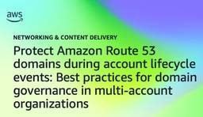
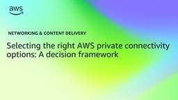
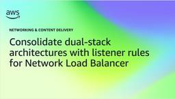
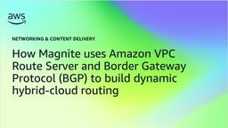
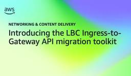
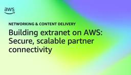
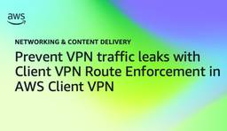

Networking & Content Delivery
フィード

Protect Amazon Route 53 domains during account lifecycle events: Best practices for domain governance in multi-account organizations 1
1
Networking & Content Delivery
Domain governance in Amazon Route 53 can mean the difference between a routine account decommissioning and an unplanned outage. Picture this situation: your organization closes an Amazon Web Services (AWS) account, and five days later a customer-facing website becomes unreachable, email stops flowing, and SSL certificate validation fails. A domain that this account had registered […]
2日前

Selecting the right AWS private connectivity options: A decision framework 1
Networking & Content Delivery
Selecting the right AWS private connectivity option is harder than it used to be. The choices now span AWS Direct Connect, AWS Direct Connect SiteLink, and AWS Interconnect (last mile and multicloud). Picking the wrong option can lead to over-provisioning, slow time to market, or rework. In this post, we present a decision framework for […]
2日前

Consolidate dual-stack architectures with listener rules for Network Load Balancer
Networking & Content Delivery
Today, Amazon Web Services (AWS) announces listener rules for Network Load Balancer (NLB), a feature that routes connections to different target groups based on the source IP address type. With listener rules, a single dual-stack NLB sends IPv6 client traffic to IPv6 targets and IPv4 client traffic to IPv4 targets, with no protocol translation and full source IP preservation for both address families.
2日前

How Magnite uses Amazon VPC Route Server and Border Gateway Protocol (BGP) to build dynamic hybrid-cloud routing
Networking & Content Delivery
Magnite, the largest independent sell-side advertising company, runs an engineering team that processes more than a trillion ad requests each day across Amazon Web Services (AWS) and its own data centers. In Magnite’s hybrid-cloud environment, network behavior is not background infrastructure. It’s part of the application. The team needs deterministic traffic steering, fast failover, and […]
3日前

Introducing the LBC Ingress-to-Gateway API migration toolkit 1
Networking & Content Delivery
Migrating your AWS Load Balancer Controller (LBC) Ingress resources to the Gateway API by hand is tedious and error prone. You need to rewrite annotations, path rules, and TLS configuration, and a mistake can disrupt the production traffic. The Ingress-to-Gateway API migration toolkit for LBC removes that risk by giving you a guided, validated path […]
4日前

Building extranet on AWS: Secure, scalable partner connectivity 1
Networking & Content Delivery
When building extranet connections between external partners and your AWS infrastructure, an integration project can become a task that requires additional work hours, additional costs, and communication inconsistencies. This post describes a secure, scalable and resilient architecture pattern for a modern extranet architecture on AWS, that minimizes commonly issues faced by usual designs: overlapping address […]
7日前

Prevent VPN traffic leaks with Client VPN Route Enforcement in AWS Client VPN
Networking & Content Delivery
Unintended traffic leaks are a real risk when you rely on remote connectivity to access cloud resources, so maintaining VPN routing integrity on connected devices is essential. When a device connects through a VPN, the administrator-defined routes instruct the operating system to direct specific traffic through the encrypted tunnel. However, those routes can be altered […]
8日前

Setting up Layer 2 Networking on Amazon EC2
Networking & Content Delivery
Some workloads are strong candidates for moving to the Amazon Elastic Compute Cloud (Amazon EC2) but depend on Layer 2 (L2) network communication, which Amazon Virtual Private Cloud (Amazon VPC) doesn’t natively support. With the right approach, you can run these workloads on AWS. Layer 2 requirements appear in a few ways. Industrial control systems […]
9日前
Fine-grained Amazon Route 53 access with IAM condition keys (Part 3)
Networking & Content Delivery
When federated users require access to DNS records in shared environments, you often turn to overly broad permissions or maintain separate policies per user. Both approaches create operational overhead and broader-than-necessary permissions that grow with your organization. Part 1 of this series showed you how to use AWS Identity and Access Management (IAM) condition keys […]
9日前
Private AI agent with WebSocket streaming over CloudFront VPC Origins and the next generation of OpenSearch Serverless for knowledge retrieval
Networking & Content Delivery
Reviewing partner contracts by hand is slow and repetitive, so teams want an AI agent to do the first pass. In the example used throughout this post, a company called Example Corp reviews incoming partner agreements against its own standard operating procedures. A partner uploads an agreement, the agent checks it against those procedures, and […]
9日前
Automating CIDR expansion: Reducing IP exhaustion downtime
Networking & Content Delivery
Learn how to build a serverless automation that monitors VPC IP utilization and expands CIDR capacity within minutes. This solution uses AWS Lambda, Step Functions, and IPAM to detect IP exhaustion risk and add secondary CIDRs with new subnets automatically. Three operating modes support environments with full IPAM management, IPAM for subnets only, or no IPAM at all. Deploy with a single SAM command and configure through VPC tags.
11日前
How United Airlines solved IP exhaustion with Private NAT Gateway
Networking & Content Delivery
United Airlines, a major U.S. airline headquartered in Chicago, Illinois, moves over 181 million passengers annually across a global route network. When severe weather grounds flights or air traffic control issues cascade across the network, United Airlines needs every system to scale instantly, rebooking passengers, reassigning crews, reprocessing flight data. But with hundreds of AWS […]
16日前
Intelligent failover using AWS Lambda@Edge and Amazon DynamoDB
Networking & Content Delivery
Modern applications increasingly require seamless user experiences and high availability, especially in scenarios where regional disruptions or outages could impact critical workloads. Businesses frequently face challenges when dynamically allocating users to specific endpoints or regions while providing persistent user-endpoint relationships and implementing robust failover mechanisms. To address these complex scenarios, this post describes a solution […]
17日前
How IAG accelerated service-to-service communication with Amazon VPC Lattice
Networking & Content Delivery
Insurance Australia Group Limited (IAG) is the largest general insurance company in Australia and New Zealand. It operates major insurance brands like NRMA Insurance, CGU, SGIO, and NZI. IAG’s modern serverless digital engineering platform is built on AWS to host digital components, microservices, and customer experiences. It provides unified patterns, consistent delivery, and strong governance, […]
18日前
Phased AWS Transit Gateway to AWS Cloud WAN Migration with Terraform and Network MCP Server
Networking & Content Delivery
Migrate from AWS Transit Gateway to AWS Cloud WAN across multiple Regions using a six-phase Terraform approach with AWS Network MCP Server validation
24日前
Intelligent VPN observability: Decoding AWS Site-to-Site VPN logs
Networking & Content Delivery
When an AWS Site-to-Site VPN connection degrades, you sift through hundreds of log entries, correlate Border Gateway Protocol (BGP) state transitions with Internet Key Exchange (IKE) phase changes and decide whether the cause is a prefix quota violation, an autonomous system (AS) path loop, or a hold timer expiry. That repetitive manual work prolongs recovery. […]
24日前
AWS Cloud WAN Routing Policy: Real-World Global Network Scenarios – Part 2
Networking & Content Delivery
In Part 1, we introduced AWS Cloud WAN routing policies and showed how you can use fine-grained controls to influence route propagation and path selection across a global network. Each routing policy is built with three core components: 1) match conditions, that evaluate route prefixes or BGP attributes; 2) actions, that determine how matching routes […]
1ヶ月前
Extending NLB health checks for RADIUS using an Amazon ECS witness
Networking & Content Delivery
Network Load Balancer health checks confirm that a RADIUS server is reachable, not that it can authenticate a user, so a server with a failed identity store keeps receiving traffic. This post walks through an open-source reference solution that closes the gap with a single Amazon ECS witness that runs application-layer RADIUS probes and reconciles NLB target group membership directly.
1ヶ月前
VPC resource gateways: Implementation patterns and use cases
Networking & Content Delivery
When you need to connect applications across Amazon Virtual Private Clouds (Amazon VPCs) to services that don’t fit the traditional AWS PrivateLink provider-consumer model, you face complex networking challenges that VPC peering and AWS Transit Gateway alone can’t easily solve. This is especially true for overlapping IP spaces. You can now connect to services that […]
1ヶ月前
Extending SD-WAN Segmentation into AWS Cloud WAN – Part 2
Networking & Content Delivery
For organizations operating multi-tenant environments, regulated environments, or multiple business units, maintaining strict network segmentation between SD-WAN and AWS is essential for meeting security, compliance, and operational requirements. This is Part 2 of the two-part series on extending SD-WAN segmentation into AWS Cloud WAN. In Part 1, the Generic Routing Encapsulation (GRE) based Connect attachment […]
1ヶ月前